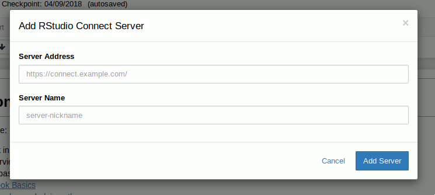
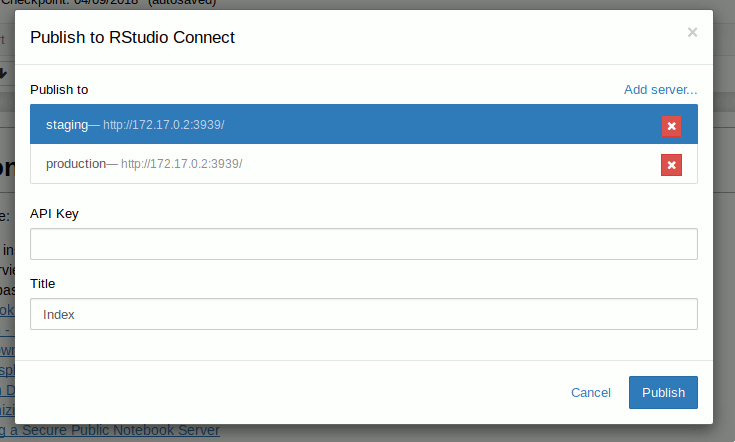
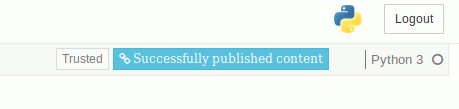

rsconnect is a plugin for Jupyter Notebook that enables publishing of notebooks to RStudio Connect.
pipwheelIf using conda, pip and wheel should already be installed.
Download the rsconnect python package from here (packaged as a wheel file).
Install the rsconnect package with the following command:
pip install rsconnect-0.1.0-py2.py3-none-any.whlEnable the rsconnect extension with the following commands:
# Install `rsconnect` as a jupyter extension for your user. If you wish
# to allow the extension to be available for all users who access
# jupyter, remove the `--user` flag
jupyter-nbextension install --user --py rsconnect
# Enable JavaScript extension
jupyter-nbextension enable --py rsconnect
# Enable Python extension
jupyter-serverextension enable --py rsconnectOpen a notebook and click the blue “Publish to RStudio Connect” icon to publish the current notebook to RStudio Connect.
If this is your first time publishing this notebook, you will be prompted to enter the location and a nickname for the RStudio Connect server.

You will then be prompted to enter your API Key which will be used to publish the notebook under your account to the selected RStudio Connect server.
See the RStudio Connect User Guide for instructions on generating API Keys for your user.

Upon successful publishing of the document a notification will be shown in toolbar. Clicking the notification will open the published document in the RStudio Connect server you selected in the previous dialog.
